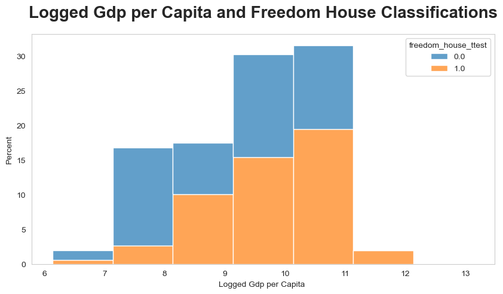

Lecture 1: T-Test and ANOVA¶
In this tutorial, we will focus on two different bivariate analysis: t-test and ANOVA.
1- Importing Dataset, Libraries and Data Organization¶
As always we will import some functions that will be used throughout the tutorial.
import numpy as np
import pandas as pd
import matplotlib.pyplot as plt
import seaborn as sns
import warnings
import operator
import csv
from collections import Counter
import scipy.stats as stats
import ipywidgets as widgets
from IPython.display import HTML
import random
---------------------------------------------------------------------------
ModuleNotFoundError Traceback (most recent call last)
/tmp/ipykernel_64596/2060528632.py in <module>
----> 1 import numpy as np
2 import pandas as pd
3 import matplotlib.pyplot as plt
4 import seaborn as sns
5 import warnings
ModuleNotFoundError: No module named 'numpy'
We do not want to see undesired warnings in our report.
warnings.filterwarnings('ignore')
In the following code cell we will create a function to hide/show code cells. Since some of the code cells that we will create in this tutorial is quite long especially the ones for the widgets. We will call this function inside the cells.
Next, we will read our dataset. In order to see the features in the data we will use info() function.
data1 = pd.read_csv(r'democracy_gdp.csv')
data1.info()
<class 'pandas.core.frame.DataFrame'>
RangeIndex: 149 entries, 0 to 148
Data columns (total 20 columns):
# Column Non-Null Count Dtype
--- ------ -------------- -----
0 Country name 149 non-null object
1 Regional indicator 149 non-null object
2 Ladder score 149 non-null float64
3 Standard error of ladder score 149 non-null float64
4 upperwhisker 149 non-null float64
5 lowerwhisker 149 non-null float64
6 Logged GDP per capita 149 non-null float64
7 Social support 149 non-null float64
8 Healthy life expectancy 149 non-null float64
9 Freedom to make life choices 149 non-null float64
10 Generosity 149 non-null float64
11 Perceptions of corruption 149 non-null float64
12 Ladder score in Dystopia 149 non-null float64
13 Explained by: Log GDP per capita 149 non-null float64
14 Explained by: Social support 149 non-null float64
15 Explained by: Healthy life expectancy 149 non-null float64
16 Explained by: Freedom to make life choices 149 non-null float64
17 Explained by: Generosity 149 non-null float64
18 Explained by: Perceptions of corruption 149 non-null float64
19 Dystopia + residual 149 non-null float64
dtypes: float64(18), object(2)
memory usage: 23.4+ KB
In the following code cell, we will remove the unnecessary columns and continue with the ones that we will use in the tests.
data1 = data1[['Country name', 'Regional indicator', 'Logged GDP per capita', 'upperwhisker', 'Freedom to make life choices', 'Generosity', 'Explained by: Log GDP per capita']]
Next step is changing some of the names of the columns for the sake of understanding.
data1 = data1.rename(columns={'Country name': 'country_name'})
data1 = data1.rename(columns={'Freedom to make life choices': 'democracy'})
data1 = data1.rename(columns={'Generosity': 'freedom_house'})
data1 = data1.rename(columns={'upperwhisker': 'freedom_house_ttest'})
In the following cell, we will create a dictionary that use country names as dictionary keys. The main idea is spliting the total data by using country names. Therefore, we can use a country name to call all the data about this country.
df_dict = {ct: data1[data1.country_name== ct].reset_index(drop=True) for ct in data1['country_name'].unique()}
In the next step, which is quite important for our tests, we will create freedom house parameters according to their categorization: free, partly free, and not free. Also we will create the number of occurances.
free=0
partly_free=0
not_free=0
for x in range(len(data1['democracy'])):
if data1['democracy'][x]> 0.8:
data1['freedom_house'][x] ='Free'
data1['freedom_house_ttest'][x]=1
free=free+1
elif data1['democracy'][x]<=0.8 and data1['democracy'][x]>= 0.6:
data1['freedom_house'][x] ='Partly Free'
data1['freedom_house_ttest'][x]=0
partly_free=partly_free+1
elif data1['democracy'][x]<0.6:
data1['freedom_house'][x] ='Not Free'
data1['freedom_house_ttest'][x]=0
not_free=not_free+1
data1
| country_name | Regional indicator | Logged GDP per capita | freedom_house_ttest | democracy | freedom_house | Explained by: Log GDP per capita | |
|---|---|---|---|---|---|---|---|
| 0 | Finland | Western Europe | 10.775 | 1.0 | 0.949 | Free | 1.446 |
| 1 | Denmark | Western Europe | 10.933 | 1.0 | 0.946 | Free | 1.502 |
| 2 | Switzerland | Western Europe | 11.117 | 1.0 | 0.919 | Free | 1.566 |
| 3 | Iceland | Western Europe | 10.878 | 1.0 | 0.955 | Free | 1.482 |
| 4 | Netherlands | Western Europe | 10.932 | 1.0 | 0.913 | Free | 1.501 |
| ... | ... | ... | ... | ... | ... | ... | ... |
| 144 | Lesotho | Sub-Saharan Africa | 7.926 | 0.0 | 0.715 | Partly Free | 0.451 |
| 145 | Botswana | Sub-Saharan Africa | 9.782 | 1.0 | 0.824 | Free | 1.099 |
| 146 | Rwanda | Sub-Saharan Africa | 7.676 | 1.0 | 0.897 | Free | 0.364 |
| 147 | Zimbabwe | Sub-Saharan Africa | 7.943 | 0.0 | 0.677 | Partly Free | 0.457 |
| 148 | Afghanistan | South Asia | 7.695 | 0.0 | 0.382 | Not Free | 0.370 |
149 rows × 7 columns
In order to see the statistical descriptions of the variables, we will use the describe() function.
data1.describe()
| Logged GDP per capita | freedom_house_ttest | democracy | Explained by: Log GDP per capita | |
|---|---|---|---|---|
| count | 149.000000 | 149.000000 | 149.000000 | 149.000000 |
| mean | 9.432208 | 0.503356 | 0.791597 | 0.977161 |
| std | 1.158601 | 0.501675 | 0.113332 | 0.404740 |
| min | 6.635000 | 0.000000 | 0.382000 | 0.000000 |
| 25% | 8.541000 | 0.000000 | 0.718000 | 0.666000 |
| 50% | 9.569000 | 1.000000 | 0.804000 | 1.025000 |
| 75% | 10.421000 | 1.000000 | 0.877000 | 1.323000 |
| max | 11.647000 | 1.000000 | 0.970000 | 1.751000 |
2- Data Visualization¶
We will start with an observation about the distribution of freedom house classifications.
fig = plt.figure(figsize=(4, 4))
ax = fig.add_axes([0,0,1,1])
freedom = ['Free','Not Free','Partly Free']
count = {free, not_free, partly_free}
plt.title('Freedom Distribution According to Freedom House', fontsize=12, fontweight='bold', pad=20)
ax.bar(freedom, count, color = 'orange', width = 0.4)
plt.ylabel('Count')
plt.show()
Next graph will show the GDP per capita distribution by defining the freedom house statuses. We will use the histplot function from seaborn library.
plt.figure(figsize=(10, 5))
sns.histplot( x='Logged GDP per capita', data=data1,alpha = .7
,hue = 'freedom_house', stat="percent", discrete=True, binwidth=1, multiple="stack", label='freedom_house');
sns.set_style("whitegrid", {'axes.grid' : False})
plt.title('Logged Gdp per Capita and Freedom House Classifications', fontsize=20, fontweight='bold', pad=20);
plt.xlabel('Logged Gdp per Capita ')
plt.show()
In the data organization part, another feature is created. This feature is a binary indicator that shows a country is whether a free country or not. Let's examine the GDP per capita distribution according to this classification. '1' for free countries and '0' for not free countries.
#For the t-test we will create binary classification for freedom house
plt.figure(figsize=(10, 5))
sns.histplot( x='Logged GDP per capita', data=data1,alpha = .7
,hue = 'freedom_house_ttest', stat="percent", discrete=True, binwidth=1, multiple="stack", label='freedom_house_ttest');
sns.set_style("whitegrid", {'axes.grid' : False})
plt.title('Logged Gdp per Capita and Freedom House Classifications', fontsize=20, fontweight='bold', pad=20);
plt.xlabel('Logged Gdp per Capita ')
plt.show()

3- T-test¶
The main focus of this section is to introduce hypothesis testing and illustrate with a few examples in Python. Whatever be the concept, its execution can be done easily with programming languages like Python. But, the most important part is drawing inference out of the output and it is highly recommended to know the math behind the executed code.
Hypothesis testing is important in statistics because it gives statistical evidence to show the validity of the study. The null hypothesis states that there is no statistical significance exists between sets of data which implies that the population parameter will be equal to a hypothesized value. Usually, We state the alternative hypothesis which we want to prove. For a null hypothesis H0 and its complementary alternative hypothesis H1, there are 3 cases when the parametric value under H0 ≠ H1 or H0 < H1 or H0 > H1.
In the first test we will apply an one sample t-test, whether the population mean, is less than 9. We will use the GDP per capita as our data now.
H0: There is no significant mean difference in Logged GDP per capita. i.e., μ = 9
H1: The population mean is less than 9. i.e., μ < 9
gdp = data1['Logged GDP per capita']
mu = 9
from scipy import stats
t_value,p_value=stats.ttest_1samp(gdp,mu)
one_tailed_p_value=float("{:.6f}".format(p_value/2)) # Since alternative hypothesis is one tailed, We need to divide the p value by 2.
print('Test statistic is %f'%float("{:.6f}".format(t_value)))
print('p-value for one tailed test is %f'%float("{:.10f}".format(p_value)))
alpha = 0.05
if one_tailed_p_value<=alpha:
print('Conclusion, since p-value(%f)'%p_value,'<','alpha(%.2f)'%alpha,'''We reject the null hypothesis H0.
So we conclude that there is no significant mean difference in GDP per capita. i.e., μ = 9 at %.2f level of significance.'''%alpha)
else:
print('Conclusion','n','Since p-value(=%f)'%one_tailed_p_value,'>','alpha(=%.2f)'%alpha,'''We do not reject the null hypothesis H0.''')
Test statistic is 4.553569
p-value for one tailed test is 0.000011
Conclusion, since p-value(0.000011) < alpha(0.05) We reject the null hypothesis H0.
So we conclude that there is no significant mean difference in GDP per capita. i.e., μ = 9 at 0.05 level of significance.
To understand the other case, I determined the hypothesis mean as the mean of the data. Lets's check the output below.
gdp = data1['Logged GDP per capita']
mu = data1['Logged GDP per capita'].mean()
from scipy import stats
t_value,p_value=stats.ttest_1samp(gdp,mu)
one_tailed_p_value=float("{:.6f}".format(p_value/2)) # Since alternative hypothesis is one tailed, We need to divide the p value by 2.
print('Test statistic is :')
print(t_value)
print('p-value for one tailed test is %f'%one_tailed_p_value)
alpha = 0.05
if one_tailed_p_value<=alpha:
print('Conclusion','n','Since p-value(=%f)'%p_value,'<','alpha(=%.2f)'%alpha,'''We reject the null hypothesis H0.
So we conclude that there is no significant mean difference in GDP per capita. i.e., μ = 9 at %.2f level of significance'''%alpha)
else:
print('Conclusion','n','Since p-value(=%f)'%one_tailed_p_value,'>','alpha(=%.2f).'%alpha,'''We do not reject the null hypothesis H0.''')
Test statistic is :
3.7429952460779064e-14
p-value for one tailed test is 0.500000
Conclusion n Since p-value(=0.500000) > alpha(=0.05). We do not reject the null hypothesis H0.
In the following test, we will use two sample, one is freedom house classifications the other one is GDP per capita.
gdp = data1['Logged GDP per capita']
freedom = data1['freedom_house_ttest']
t_value,p_value=stats.ttest_ind(gdp,freedom)
print('Test statistic is %f'%float("{:.10f}".format(t_value)))
print('p-value for two tailed test is:' )
print(p_value)
alpha = 0.05
if p_value<=alpha:
print('')
print('Conclusion, since p-value(=%f)'%p_value,'<','alpha(=%.2f).'%alpha,'''We reject the null hypothesis H0. So, we conclude that μ1 = μ2 at %.2f level of significance.'''%alpha)
else:
print('Conclusion, since p-value(=%f)'%p_value,'>','alpha(=%.2f).'%alpha,'''We do not reject the null hypothesis H0.''')
Test statistic is 86.325644
p-value for two tailed test is:
6.675281120389064e-212
Conclusion, since p-value(=0.000000) < alpha(=0.05). We reject the null hypothesis H0. So, we conclude that μ1 = μ2 at 0.05 level of significance.
4- T-Test Interactive Widget¶
In the following section, we will create an interactive widget. For the kernel density distribution, we will use Logged GDP per capital. User can change the test type (one-tail, two-tailed) and alpha level.
a = widgets.Dropdown(
options=['0.05', '0.01', '0.001'],
value='0.05',
description='α level:',
disabled=False,
continuous_update=False
)
c = widgets.Dropdown(
options=['one-tail', 'two-tail'],
value='one-tail',
description='Test:',
disabled=False,
continuous_update=False
)
def two_tail(tail,value):
values_2 = np.array(data1['Logged GDP per capita'])
plt.figure()
if tail == 'one-tail':
if value == '0.05':
mult = 1.645
elif value == '0.01':
mult = 2.33
elif value == '0.001':
mult = 3.1
two_std_from_mean = np.mean(values_2) + np.std(values_2)*mult
kde = stats.gaussian_kde(values_2)
pos = np.linspace(np.min(values_2)-10, np.max(values_2)+10, 10000)
plt.plot(pos, kde(pos), color='teal')
shade = np.linspace(two_std_from_mean, np.max(values_2)+10, 300)
plt.fill_between(shade, kde(shade), alpha=0.45, color='teal')
plt.axvline(two_std_from_mean, 0, 1, color ='gray',linestyle='--')
plt.title("Logged GDP per capita T-Test Widget", y=1.015, fontsize=15)
plt.xlabel("Logged GDP per capita", labelpad=14)
plt.ylabel("frequency of occurence", labelpad=14)
elif tail == 'two-tail':
if value == '0.05':
mult = 1.96
elif value == '0.01':
mult = 2.575
elif value == '0.001':
mult = 3.29
alpha_05_positive = np.mean(values_2) + np.std(values_2)*mult
alpha_05_negative = np.mean(values_2) - np.std(values_2)*mult
kde = stats.gaussian_kde(values_2)
pos = np.linspace(np.min(values_2)-10, np.max(values_2)+10, 10000)
plt.plot(pos, kde(pos), color='dodgerblue')
shade = np.linspace(alpha_05_positive, np.max(values_2)+10, 300)
plt.fill_between(shade, kde(shade), alpha=0.45, color='dodgerblue')
shade2 = np.linspace(alpha_05_negative, np.min(values_2)-10, 300)
plt.fill_between(shade2, kde(shade2), alpha=0.45, color='dodgerblue')
plt.axvline(alpha_05_positive, 0, 1, color ='gray',linestyle='--')
plt.axvline(alpha_05_negative, 0, 1, color ='gray',linestyle='--')
plt.title("Logged GDP per capita T-Test Widget", y=1.015, fontsize=15)
plt.xlabel("Logged GDP per capita", labelpad=14)
plt.ylabel("frequency of occurence", labelpad=14)
widgets.interact(two_tail, value=a, tail=c);
5- ANOVA¶
ANOVA test is a way to find out if survey or experiment results are significant. In other words, they help you to figure out if you need to reject the null hypothesis or accept the alternate hypothesis.
In the first part, we will rely on Pingouin library.
import pingouin as pg
aov = pg.anova(data=data1, dv='Logged GDP per capita', between='freedom_house', detailed=True)
aov
| Source | SS | DF | MS | F | p-unc | np2 | |
|---|---|---|---|---|---|---|---|
| 0 | freedom_house | 23.714478 | 2 | 11.857239 | 9.894903 | 0.000093 | 0.119367 |
| 1 | Within | 174.954405 | 146 | 1.198318 | NaN | NaN | NaN |
As we can see, we have a p-value below the threshold, so there is a significant difference between the various groups.
We can also use scipy tools to implement ANOVA. Let's get started by importing f function.
from scipy.stats import f
Next, we will choose data columns that we will use.
data2 = data1[['Logged GDP per capita','freedom_house_ttest']]
data2
| Logged GDP per capita | freedom_house_ttest | |
|---|---|---|
| 0 | 10.775 | 1.0 |
| 1 | 10.933 | 1.0 |
| 2 | 11.117 | 1.0 |
| 3 | 10.878 | 1.0 |
| 4 | 10.932 | 1.0 |
| ... | ... | ... |
| 144 | 7.926 | 0.0 |
| 145 | 9.782 | 1.0 |
| 146 | 7.676 | 1.0 |
| 147 | 7.943 | 0.0 |
| 148 | 7.695 | 0.0 |
149 rows × 2 columns
The first step to perform an ANOVA test is to calculate the SST (total sum of squares), the SSW (total sum of squares within), and the SSB (total sum of squares between), and the corresponding degrees of freedom. They calculated as following:
SST is the sum of the squared distance between each data point and the mean of the dataset. The degrees of freedom, in this case, is the number of groups m times the number of data points n in each group, and then we subtract 1, i.e., m•n -1.
SSW is the sum of the squared distance between each data point and the respective group mean. The degrees of freedom is the number of groups times the number of data points minus 1, i.e., m•(n -1).
SSB is the sum of the squared distance between each group mean and the mean of the dataset for each data point. The degrees of freedom is the number of groups minus 1, i.e., m -1.
m = data2.shape[1]
n = data2.shape[0]
SST = np.sum(np.sum((data2 - np.mean(np.mean(data2)))**2))
SST
6175.385322822148
data2_sst = m*n-1
data2_sst
297
SSW = np.sum(np.sum((data2 - np.mean(data2))**2))
SSW
235.9172046979866
data2_ssw = m*(n-1)
data2_ssw
296
SSB = np.sum(np.sum((np.tile(np.mean(data2), (3,1)) - np.mean(np.mean(data2)))**2))
SSB
119.58660640518437
data2_ssb = m-1
data2_ssb
1
Let’s define our hypothesis test.
As usual, we will assume that our null hypothesis is true and figure out the probability of getting a statistic as extreme or more extreme than the one we get from the data observed. For that, we will use an F-statistic, which is basically a ratio of two chi-square statistics. It is actually the ratio of two of the metrics calculated above divided by their respective degrees of freedom:
The idea is that if the numerator is significantly larger than the denominator, this should make us believe that there is a difference between the true populations' means. Conversely, if the denominator is significantly larger, it means that the variation within each sample is a bigger percentage of the total variation when compared with the variation between the samples. Thus, any difference we could observe in the means is probably just a result of random chance.
F = (SSB/data2_ssb)/(SSW/data2_ssw)
F
150.04261999988282
f.ppf(0.95, dfn=data2_ssb, dfd=data2_ssw)
3.8730662237529048
Now, we can calculate our p-value. Let’s use a significance level of 0.1.
p_value = (1 - f.cdf(F, dfn=data2_ssb, dfd=data2_ssw))*2
p_value
2.220446049250313e-16
if p_value<0.1:
print('Reject H_0')
else:
print('Accept H_0')
Reject H_0
We see that the p-value is smaller than the significance level, which makes us reject the null hypothesis. There is enough evidence to accept a difference between the populations’ means that does not come from chance alone or from the variance within each group.